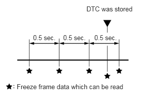

| Last Modified: 10-07-2025 | 6.11:8.1.0 | Doc ID: RM100000002IY81 |
| Model Year Start: 2024 | Model: Tacoma | Prod Date Range: [12/2023 - ] |
| Title: AL80E (AUTOMATIC TRANSMISSION / TRANSAXLE): AUTOMATIC TRANSMISSION SYSTEM: DIAGNOSIS SYSTEM; 2024 - 2026 MY Tacoma [12/2023 - ] | ||
DIAGNOSIS SYSTEM
DESCRIPTION
(a) When troubleshooting On-Board Diagnostic (OBD II) vehicles, an OBD II scan tool (complying with SAE J1978) must be connected to the vehicle. Various data output from the vehicle TCM can then be read.
(b) OBD II regulations require that the vehicle on-board computer illuminate the Malfunction Indicator Lamp (MIL) on the instrument panel when the computer detects a malfunction in:
- The emission control system/components
- The powertrain control components (which affect vehicle emissions)
- The computer
In addition, the applicable Diagnostic Trouble Codes (DTCs) prescribed by SAE J2012 are recorded in the TCM memory.
If a malfunction does not recur, the MIL remains illuminated until the ignition switch is turned off, and the MIL turns off when the engine is started. However, the DTCs will remain recorded in the TCM memory.
(c) To check DTCs, connect the GTS to the Data Link Connector 3 (DLC3) of the vehicle. The GTS displays DTCs, freeze frame data and a variety of engine data.
The DTCs and freeze frame data can be cleared with the GTS.
Click here
![2024 - 2026 MY Tacoma [12/2023 - ]; AL80E (AUTOMATIC TRANSMISSION / TRANSAXLE): AUTOMATIC TRANSMISSION SYSTEM: DTC CHECK / CLEAR](../../../../stylegraphics/info.gif)
NORMAL MODE AND CHECK MODE
(a) The diagnosis system operates in "normal mode" during normal vehicle use. In normal mode, "2 trip detection logic" is used to ensure accurate detection of malfunctions. "Check mode" is also available to technicians as an option. In check mode, "1 trip detection logic" is used for simulating malfunction symptoms and increasing the system's ability to detect malfunctions, including intermittent problems (GTS only).
2-TRIP DETECTION LOGIC
(a) When a malfunction is first detected, the malfunction is temporarily stored in the TCM memory (1st trip). If the same malfunction is detected during the next driving cycle, the MIL is illuminated (2nd trip).
FREEZE FRAME DATA
(a) The TCM records vehicle and driving condition information as freeze frame data the moment a DTC is stored. When troubleshooting, freeze frame data can be helpful in determining whether the vehicle was moving or stationary, whether the engine was warmed up or not, whether the air/fuel ratio was lean or rich, as well as other data recorded at the time of a malfunction.
(b) The GTS records freeze frame data in 5 different instances: 1) 3 times before the DTC is stored, 2) once when the DTC is stored, and 3) once after the DTC is stored. These sets of data can be used to simulate the vehicle condition around the time when the malfunction occurred. The data may help in finding the cause of the malfunction, or in judging if the DTC was caused by a temporary malfunction.
CHECK DATA LINK CONNECTOR 3 (DLC3)
(a) Check the DLC3.
Click here
CHECK BATTERY VOLTAGE
Standard voltage:
11 to 14 V
If the voltage is below 11 V, recharge or replace the battery.
CHECK MIL
(a) Check that the MIL illuminates when the ignition switch is turned to ON.
If the MIL does not illuminate, there is a problem in the MIL circuit.
Click here
(b) When the engine is started, the MIL should turn off.